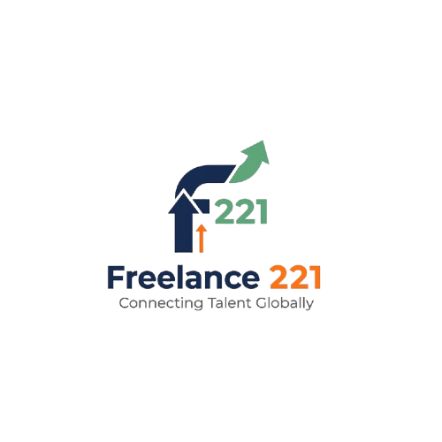

Freelance.sn est un projet entrepreneurial porté par Serigne Thierno Bousso, étudiant en informatique et passionné par l’accompagnement académique et professionnel. Ce projet est né de la volonté de transformer mes compétences en services utiles et accessibles. Il repose sur une double base : mon parcours universitaire et mes formations complémentaires. J’ai suivi des formations avec FORCE-N, qui m’ont permis de renforcer mes compétences en entrepreneuriat et gestion de projets. J’ai également suivi des cours sur Coursera, où j’ai acquis des connaissances en informatique, cybersécurité et organisation professionnelle. Le CRE m’a offert des ateliers pratiques sur la création d’entreprise et le développement de projets. J’ai participé à plusieurs bootcamps, qui m’ont permis de rencontrer des professionnels et d’élargir mon réseau. Ces expériences ont nourri ma passion et m’ont donné une vision plus claire de mes ambitions. Freelance.sn se positionne comme une plateforme de services académiques et numériques. Elle propose la préparation de CV, lettres de motivation et dossiers Campus France et Parcoursup. Le projet inclut aussi la création de logos et supports visuels simples. Il met en avant la rigueur, la transparence et la qualité comme valeurs fondamentales. Freelance.sn est pensé pour être accessible aux étudiants et jeunes professionnels. Il s’appuie sur une méthodologie claire et reproductible. Le projet est porté par une vision d’excellence et d’innovation. Il reflète mon engagement à transformer mes compétences en opportunités concrètes. Freelance.sn est une initiative qui combine passion, savoir-faire et rencontres inspirantes. Il est conçu pour évoluer et intégrer de nouveaux services au fil du temps. Enfin, Freelance.sn est une vitrine de mon parcours académique et entrepreneurial.
Le projet Freelance.sn est né de mon expérience personnelle et de mes formations complémentaires. J’ai commencé par aider des camarades à préparer leurs dossiers académiques. Cette première étape m’a révélé un besoin réel et constant chez les étudiants. J’ai ensuite élargi mes services à la rédaction de CV et lettres de motivation. La mise en page professionnelle et la valorisation des profils sont devenues mes spécialités. J’ai suivi des formations avec FORCE-N, qui m’ont donné des outils pratiques pour structurer mon projet. Coursera m’a permis d’approfondir mes connaissances en informatique et cybersécurité. Le CRE m’a formé à la création et au développement de projets entrepreneuriaux. Les bootcamps auxquels j’ai participé m’ont offert des expériences immersives. J’y ai rencontré des mentors, des entrepreneurs et des étudiants passionnés. Ces rencontres ont renforcé ma motivation et élargi mon réseau professionnel. Chaque formation a contribué à enrichir ma vision et mes compétences. Freelance.sn s’est construit sur une base solide de savoirs théoriques et pratiques. Il a évolué grâce à l’expérience acquise sur la plateforme Freelance.sn et auprès de clients variés. Chaque mission a permis de renforcer mes compétences en organisation et communication. Le projet s’est distingué par sa capacité à fournir des livrables reproductibles et fiables. Il a intégré des checklists et modèles pour simplifier les démarches académiques. Freelance.sn est aujourd’hui un projet en phase de consolidation. Il bénéficie de l’expérience académique et des formations suivies par son fondateur. Enfin, ce parcours illustre une progression naturelle vers une entreprise viable.
L’objectif principal de Freelance.sn est de devenir une entreprise structurée et reconnue. Le projet vise à élargir son portefeuille de services pour répondre à une demande plus large. Il ambitionne de proposer des solutions numériques innovantes pour étudiants et professionnels. Freelance.sn souhaite développer une plateforme en ligne intuitive et interactive. L’objectif est de centraliser tous les services dans un espace unique et accessible. Le projet veut bâtir une identité forte et crédible sur le marché sénégalais et africain. Il vise à obtenir une reconnaissance officielle en tant qu’entreprise enregistrée. Freelance.sn souhaite créer des partenariats avec des institutions académiques et entreprises locales. Le projet ambitionne de former une équipe pour diversifier les compétences disponibles. Il veut intégrer des services de développement web et design graphique plus avancés. Les formations suivies avec FORCE-N, Coursera et CRE serviront de socle méthodologique. Les bootcamps et rencontres inspirantes guideront la stratégie de croissance. L’objectif est de transformer l’activité en une source de revenus stable et durable. Freelance.sn souhaite aussi élargir son audience en proposant des services bilingues. Le projet vise à obtenir des certifications pour renforcer sa crédibilité. Il ambitionne de devenir une référence dans la préparation de dossiers académiques. Freelance.sn veut contribuer à la réussite des étudiants et jeunes professionnels. Il souhaite rester en constante évolution et s’adapter aux nouvelles tendances. L’objectif ultime est de faire de Freelance.sn une entreprise durable et respectée. Enfin, Freelance.sn veut incarner la passion, la rigueur et l’innovation de son fondateur.
